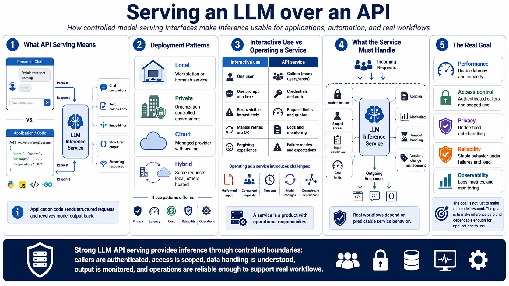

What It Means to Serve an LLM over an API
Connecting to LMS... Progress: in progress

Narration
Serving an LLM over an API means making model inference available to applications through a controlled request and response interface. Instead of a person typing into a local chat window, application code sends structured requests to a service and receives model output back. That service may support chat completions, text completions, embeddings, structured output, streaming responses, or a mix of these patterns.
LLM serving can be local, private, cloud-based, or hybrid. A local service might run on a workstation or homelab server. A private service might run inside an organization-controlled environment. A cloud service may provide managed scaling and model access. A hybrid design might route some requests to local models and others to hosted providers. Each pattern has different implications for privacy, latency, cost, reliability, and operations.
Running a model interactively is not the same as operating it as a service. Interactive use is often forgiving: one user, one prompt, visible errors, and manual retries. An API service has callers, credentials, request limits, logs, monitoring, failure modes, and user expectations. It has to handle malformed input, concurrent requests, timeouts, model changes, and downstream systems that may rely on its output.
API serving requires attention to performance, access control, privacy, reliability, and observability. The goal is not merely to get a model responding. The goal is to provide inference through boundaries that applications can use safely: callers are authenticated, access is scoped, data handling is understood, output is monitored, and operational behavior is predictable enough to support real workflows.